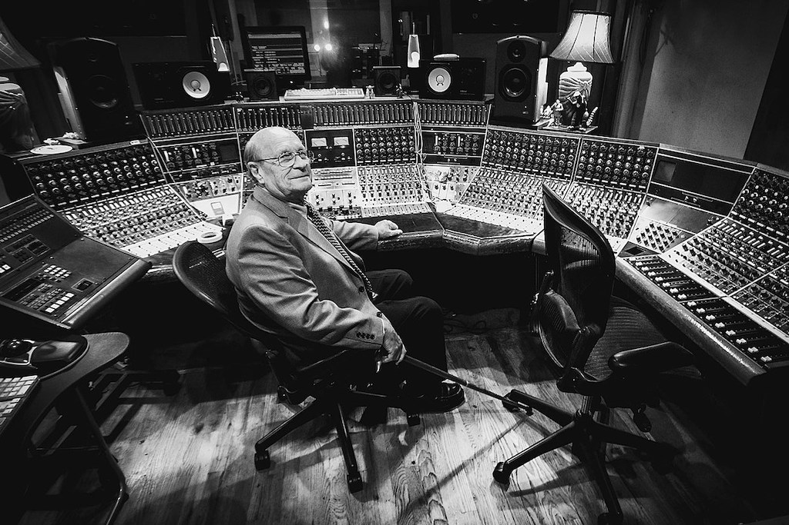

Mr. Rupert Neve
A Pioneer Of Audio Recording

Rupert Neve in 2009 in front of one of his famed Neve consoles.
Here's a time line of Rupert Neve's life:
- 1926 - Born in Newton Abbot, England
- Early life - He spent the majority of his early childhood in Argentina where his father was a missionary.
- Teenage Years - He began designing audio amplifiers and radio receivers at 13 years of age. At 17, he joined the Royal Corps of Signals and served in World War Two.
- 1940's - He begins his career as a designer of public address systems, and recorded speakers and singers on lacquer discs.
- 1950's - Neve forms CQ Audio, a company specializing in the manufacture of hifi speaker systems.
- 1960's - He forms Neve Electronics, and began designing and building mixing consoles for recording studios.
- 1970's - He sold Neve Electronics and then worked on a training program for missionaries to use radio broadcasting equiptment.
- 1980's - Was inducted into the mix hall of fame.
- 1990's - Was the third person to receive a Technical Grammy Award for lifetime accomplishment and selected as the number one audio personality of the 20th century.
- 2000's - Establlished Rupert Neve Designs marketing a variety of microphone preamplifiers, equalizers, compressors, and other recording equipment.
- 2005 - Rupert Neve died on February 12th 2021 in Wimberley Texas. He was 94 years old.
"He's a genius"
-- Dave Grohl
If you have time, you should read more about this incredible human being on his Wikipedia entry